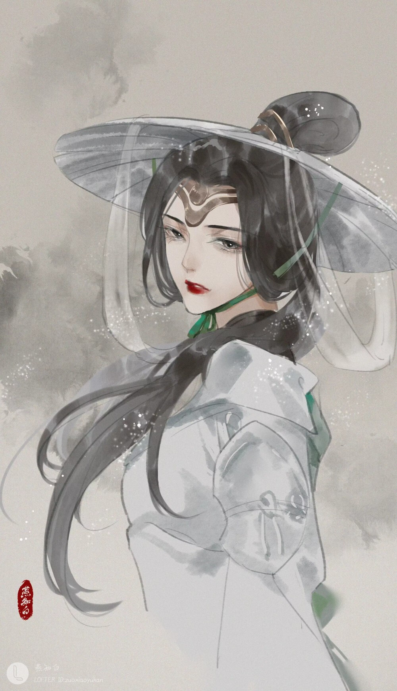

故乡的风吹过漫漫古道，扬起金色风沙若妖娇的长安花，枯树的枝丫疯狂的伸张到天空，把落日分割成离奇的形状。上官婉儿已经走了很久了，在这条古道上，很多次在她失去所有补给后，以为自己人生的道路将结束时，总有村落在前方出现，或许是上苍眷顾，或许是心中那团雪耻的火焰正熊熊燃烧，上官认为自己离倒下尚早。
上官大步踏入村庄，目光所到之处皆是长垣断壁，暗红的血液四处可见，这里发生了一场残酷的战斗。她不禁想起一月前从万石窟飞回的白鹰，带来关于魔种入侵的消息。 “没想到魔种已经入侵到长城内部了吗？”上官皱眉自语:“守卫军会如何呢，或许我该书写奏明陛下。”
“太公的鱼钩已经放下，再狡猾的鱼儿也不会忍得太久！”男子收回魔力，他深深的凝视上官婉儿留在空中的墨痕，无声的笑了。 “走吧，该去迎接我们真正的朋友了！”
待续----------30%
待续----------30%
待续----------30%
About
Dialogue
横如千里阵云，折如百钧弩发
篆法圆奋，章草飘落，八分凶险，飞白窈窕
700
逆锋
skills of playing hero
落笔惊鸿 以笔为剑
书
被动笔阵：上官婉儿每第三次普攻将进行强化攻击，对一条路径上的敌人造成额外的法术伤害
篆法・疾势：上官婉儿朝指定方向挥出一记力道苍劲的笔墨，笔墨将会迅速减缓飞行速度并对触碰的敌人造成法术伤害;当达到最远距离时，笔墨将会爆炸散开，对附近敌人造成法术伤害
飞白・藏锋：上官婉儿选择一个点，然后以自己的位置为终点进行书写，落笔的一瞬间对触碰的敌人造成法术伤害，书写过程中将会对触碰敌人造成法术伤害和减速效果。毛笔移动过程中，与婉儿其他笔势接触时，会迸发笔力，对附近敌人造成法术伤害。(每 10 秒储存一次笔势，最多可储备 2 次)
章草・横鳞：上官婉儿与笔墨共舞对一条路径上的敌人造成法术伤害。如果在冲刺过程中命中了敌人或者飞白・藏锋的笔势，则可以在一段时间内再次通过移动指令发出冲刺(总计可以进行至多 5 次冲刺，停止期间可以攻击和施法)。如果上官婉儿完成了 5 次冲刺，会跳跃至高空(期间不可被选中)，不断朝附近敌人发出攻击造成法术伤害(累计 10 次攻击，对同一单位伤害衰减到50%)
天狼绘梦者
言为心声，字为心画
“ 笔落兴亡定三端之妙，墨写清白尽六艺之奥。纂笔，横鳞，身为女子，最快意的，莫过于持手中笔，量天下事”
2